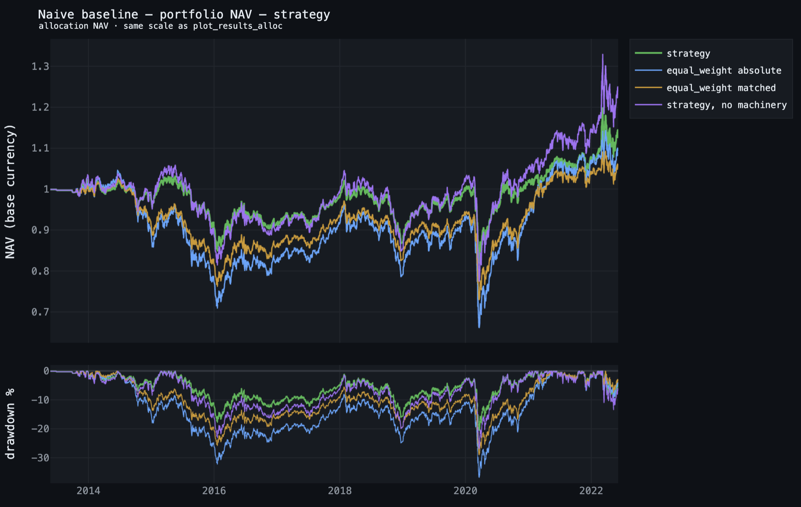
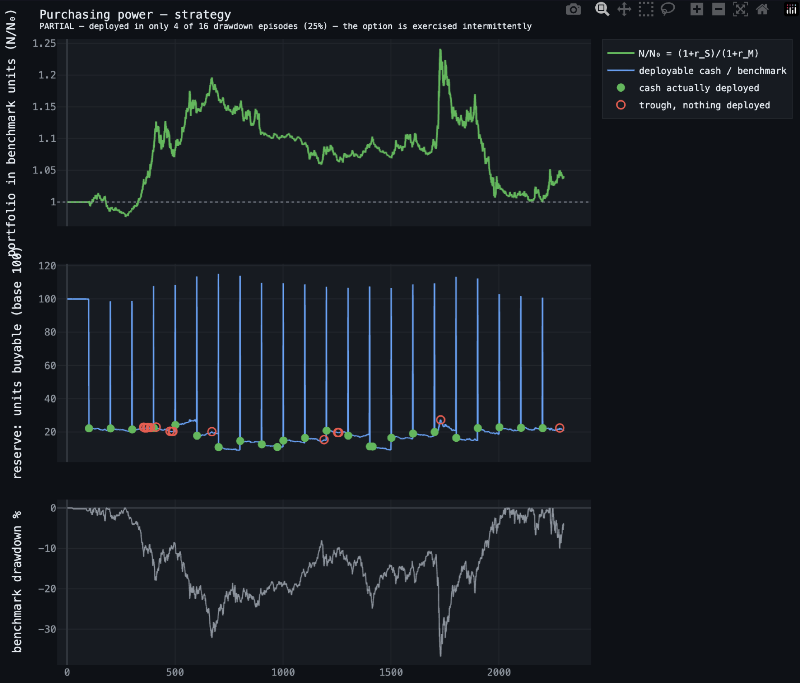
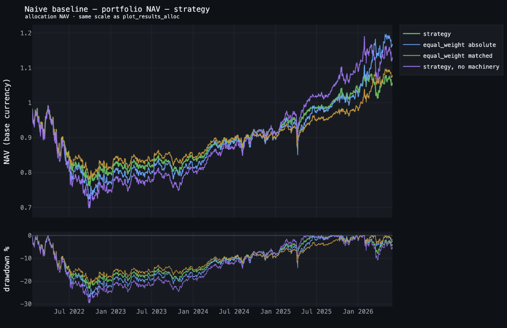
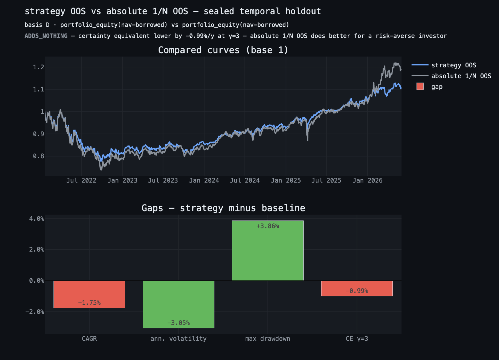
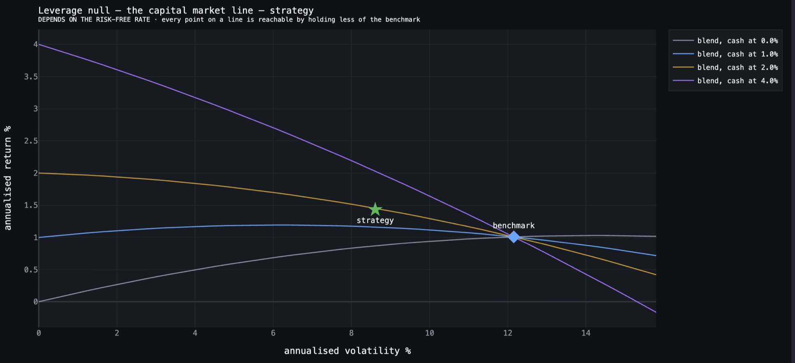
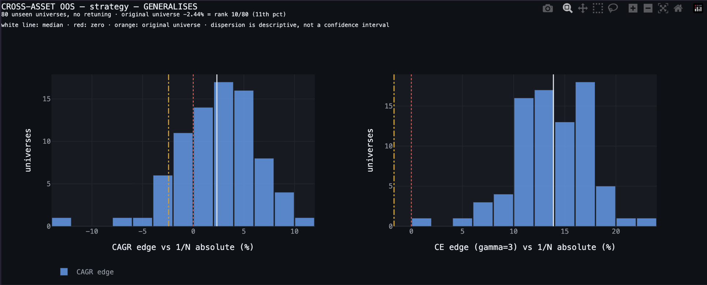
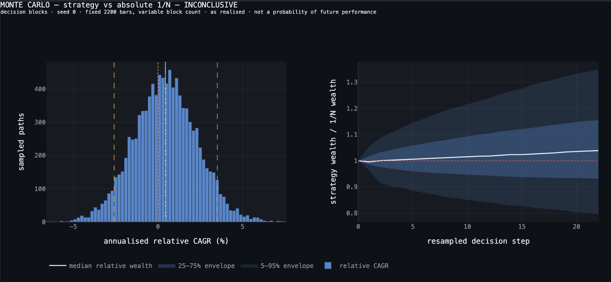
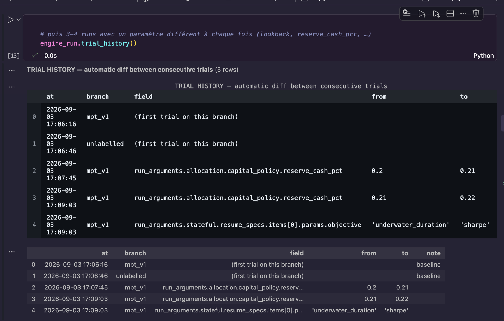
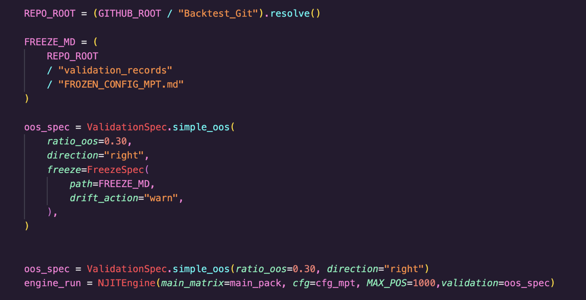
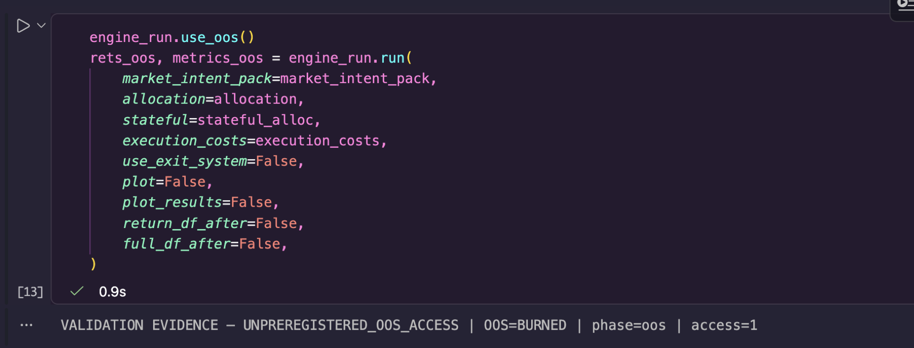

Cette note applique la couche de validation à une optimisation du ratio de Sharpe. Elle ajoute surtout cinq tests que la première note n'avait pas : un compteur d'essais indexé par les données, un Sharpe déflaté, une mesure de concentration de l'écart, une distribution d'écarts sur des univers jamais vus, et un registre de préinscription. La stratégie testée sert de banc d'essai.
Une optimisation moyenne-variance glissante, long-only, plafonnée à 35 % par nom, réestimée sur 100 barres et rebalancée toutes les 100. Cinq actifs : Brent, DAX, GBP/USD, S&P 500, or. Barres journalières de mai 2013 à juin 2022, soit 2 298 barres et 22 décisions ; les derniers 30 % de l'historique servent d'échantillon hors échantillon, soit 1 126 barres.
Par-dessus, la politique testée : 30 % de réserve de trésorerie (20 % dynamique, 10 % fixe), 2 % de frais de gestion provisionnés à l'année et payés au trimestre, 5 % de commission de surperformance avec high-water mark, coûts d'exécution au comptant prélevés dans le run. Le capital est géré en capitalisation : les gains restent dans le portefeuille et la base sur laquelle les poids s'appliquent suit l'equity. La performance est mesurée sur l'equity nette de la dette, jamais sur les rendements par trade.
Une marge volontaire : la fenêtre d'estimation s'arrête une barre plus tôt que ce que le délai d'exécution imposerait. La section 08 chiffre ce qu'elle coûte.
Chaque table de cette page est une sortie de la couche de validation, reproduite telle quelle ; les paragraphes sont ma lecture. Les verdicts en majuscules sont ceux que l'outil imprime, pas les miens.
Le tableau les liste tous, pas seulement ceux qui ont tourné ici. Les deux colonnes qui comptent sont la catégorie, qui dit à quelle question le test répond, et le statut, qui dit ce qu'il a répondu sur ce run. La chaîne est exécutée dans un ordre imposé : tout ce qui ne consomme pas l'échantillon réservé passe avant.
| Catégorie | Test | Ce qu'il demande | Sur ce run |
|---|---|---|---|
| Intégrité | validation_triage | Quelle série mesure-t-on, et combien d'observations ? | Prérequis |
validation_covariance | L'estimateur de covariance prédit-il quelque chose ? | Non lancé | |
| Détection | validation_baseline | L'écart existe-t-il contre l'équipondération ? | En échantillon oui, hors échantillon non |
validation_null_leverage | Détenir moins du panier aurait-il suffi ? | Dépend du taux | |
validation_null_sizing | L'écart vient-il des poids ou du dimensionnement ? | Non lancé | |
validation_purchasing_power | L'écart est-il produit là où il sert ? | Partiel | |
validation_mc | Quelle dispersion est compatible avec cet écart ? | Non concluant | |
| Rétention | validation_oos_retention | L'écart survit-il à la période mise de côté ? | Non retenu |
validation_cross_asset | L'écart survit-il à des univers jamais vus ? | Généralise | |
validation_edge_concentration | L'écart repose-t-il sur quelques fenêtres ? | Sous le seuil | |
| Surapprentissage | trial_counter_status | Combien de configurations distinctes ont été essayées ? | 4 essais, 1,6 effectifs |
validation_dsr | Le Sharpe survit-il au nombre d'essais ? | Indisponible | |
| Gouvernance | freeze_configuration | La configuration est-elle préinscrite avant le holdout ? | Non exercé |
validation_reverse_stress | Quel choc faut-il pour franchir un seuil qui compte ? | Page dédiée |
Trois colonnes, trois questions. 1/N absolu est le panier équipondéré sans aucune machinerie de trésorerie : ce qu'un investisseur aurait pu détenir sans modèle. 1/N apparié garde toute la machinerie et ne change que la règle de pondération. La stratégie passe devant les deux, ce qui est le cas de figure le moins fréquent dans la littérature.
| Annualisé | Stratégie | 1/N absolu | 1/N apparié | Écart vs absolu |
|---|---|---|---|---|
| Rendement (CAGR) | 1,43 % | 1,01 % | 0,61 % | +0,42 pt |
| Volatilité | 8,61 % | 12,15 % | 9,33 % | −3,54 pt |
| Drawdown maximal | −20,47 % | −36,77 % | −28,94 % | +16,30 pt |
| Calmar | 0,07 | 0,03 | 0,02 | +0,04 |
| Équivalent certain, γ = 3 | 0,68 % | −0,50 % | −0,27 % | +1,17 pt |
absolute : stripped reserve_cash_pct, fixed_cash_reserve · keeps execution
costs, management fee, performance fee, currencies
matched : every piece of machinery kept, only the weighting rule swapped
carrier : portfolio_equity(nav-borrowed) · basis D
VERDICT ADDS_VALUE — certainty equivalent higher by +1.17%/y at γ=3
no p-value: the allocation baseline is deterministic. This is a gap, not a test.

L'objectif optimisé est le ratio de Sharpe. L'écart le plus large n'apparaît pourtant pas sur la volatilité, qui passe de 12,15 % à 8,61 %, mais sur le drawdown maximal, qui passe de −36,77 % à −20,47 %, soit 16,30 points. Le rendement, lui, gagne 0,42 point contre le 1/N absolu et 0,82 contre le 1/N apparié.
Le passage de 1/N absolu à 1/N apparié isole la machinerie sur la jambe de référence : 1,01 % devient 0,61 %, soit 0,40 point. Sur la jambe de la stratégie, le même retrait vaut 0,98 point.
La grille croise les deux leviers. Retirer la machinerie des deux jambes laisse la règle de pondération face à l'équipondération, toutes deux pleinement investies : 2,41 % contre 1,01 %, soit +1,41 point. C'est la comparaison la plus directe entre les deux règles. La machinerie coûte 0,98 point à la stratégie et 0,40 à l'équipondération ; l'écart de 0,58 point entre ces deux coûts est le terme d'interaction que la grille isole.
| Machinerie active | Machinerie retirée | Effet de la machinerie | |
|---|---|---|---|
| Poids de la stratégie | 1,43 % | 2,41 % | −0,98 pt |
| Équipondération | 0,61 % | 1,01 % | −0,40 pt |
| Interaction | −0,58 pt | ||
| Effet des poids | +0,82 pt | +1,41 pt |
Sur 16 épisodes où le panier a perdu plus de 10 %, la réserve n'a été déployée que dans 4. Elle bouge 24 fois au total, donc le mécanisme fonctionne ; il ne se déclenche simplement pas là où il compte. Et le rendement moyen pondéré par les états passe de +0,0071 % brut à −0,0017 % à γ = 3 : l'écart est produit dans des états où il vaut moins cher, pas dans ceux où un investisseur averse au risque le paierait.
deployable cash = cash_value - cash_fixed_reserve - cash_vault
benchmark drawdown episodes below -10% 16
episodes where cash was deployed 4 (25%)
deployment episodes 24
mean cash fraction of NAV 19.3%
Merton indifference γ for this cash level n/a — the benchmark did not
beat cash on this sample
VERDICT PARTIAL — deployed in only 4 of 16 drawdown episodes (25%)
— the option is exercised intermittently

Mêmes trois colonnes, sur les 1 126 barres jamais regardées pendant la construction. Le panier monte nettement plus vite sur cette période, et la stratégie ne suit pas.
| Annualisé | Stratégie | 1/N absolu | 1/N apparié | Écart vs absolu |
|---|---|---|---|---|
| Rendement (CAGR) | 1,58 % | 4,02 % | 2,08 % | −2,44 pt |
| Volatilité | 10,40 % | 13,35 % | 10,23 % | −2,95 pt |
| Drawdown maximal | −23,14 % | −27,00 % | −21,36 % | +3,86 pt |
| Calmar | 0,07 | 0,15 | 0,10 | −0,08 |
| Équivalent certain, γ = 3 | 0,48 % | 2,17 % | 1,02 % | −1,69 pt |
En échantillon, la règle valait +0,82 point contre le 1/N apparié ; hors échantillon elle vaut −0,50 point. La machinerie de trésorerie, qui coûtait 0,40 point en échantillon, en coûte 1,93 ici : sur une période où le panier monte, retenir un cinquième du capital coûte beaucoup plus cher que sur une période sans tendance. Une bonne part du renversement vient de là, et pas de la règle de pondération.
VERDICT ADDS_NOTHING — certainty equivalent lower by -1.69%/y at γ=3
— equal_weight absolute does better for a risk-averse investor
no p-value: the allocation baseline is deterministic. This is a gap, not a test.


Toute stratégie qui rend moins que son benchmark invoque la même défense : elle échange du rendement contre moins de risque. La réfutation ne demande aucun modèle. Un investisseur qui veut moins de risque détient une fraction du panier et garde le reste en liquidités, et atterrit sur la droite qui relie le cash au panier. Une stratégie sous cette droite est dominée. Le taux sans risque est balayé, pas supposé : c'est le seul paramètre que personne ne peut trancher après coup.
| Taux sans risque | Fraction du panier | Mélange | Écart à vol égale | Écart à drawdown égal |
|---|---|---|---|---|
| 0,00 % | 0,708 | 0,87 % | +0,56 pt | +0,72 pt |
| 1,00 % | 0,708 | 1,16 % | +0,27 pt | +0,24 pt |
| 2,00 % | 0,708 | 1,45 % | −0,02 pt | −0,13 pt |
| 4,00 % | 0,708 | 2,03 % | −0,60 pt | −0,78 pt |
Le signe s'inverse juste sous 2 %, au même endroit sur les deux appariements, ce qui écarte un artefact. Sur la période le taux court réalisé est resté sous ce seuil, ce qui place la stratégie du bon côté ; la marge est de 0,27 point à 1 %. À noter, l'outil ne peut pas calculer le γ d'indifférence de Merton pour ce niveau de trésorerie : le panier lui-même n'a pas battu le cash sur l'échantillon.
risk_free w (vol-matched) blend CAGR strategy CAGR gap at equal vol 0.00% 0.708 0.87% 1.43% +0.56 pt 1.00% 0.708 1.16% 1.43% +0.27 pt 2.00% 0.708 1.45% 1.43% -0.02 pt 4.00% 0.708 2.03% 1.43% -0.60 pt

Le test précédent porte sur un panier et une période. Celui-ci rejoue la configuration enregistrée, sans changer un seul paramètre, sur 80 paniers de cinq actifs tirés dans un pool inédit, sur cette même période hors échantillon. Actifs jamais vus sur une période jamais vue : c'est le double hors échantillon, et il consomme l'échantillon réservé. Dix-neuf tickers sur vingt couvrent la fenêtre, un est écarté pour un trou à l'intérieur.
| Écart contre 1/N absolu | 5 % | 25 % | 50 % | 75 % | 95 % |
|---|---|---|---|---|---|
| Écart de CAGR | −3,62 % | +0,04 % | +2,34 % | +4,71 % | +8,54 % |
| Écart d'équivalent certain, γ = 3 | +7,55 % | +11,80 % | +13,89 % | +16,57 % | +18,48 % |
| Écart de drawdown | +6,31 % | +8,85 % | +10,19 % | +11,39 % | +12,68 % |
L'univers d'origine marque −2,44 %, exactement l'écart mesuré par la baseline hors échantillon : les deux tests se recoupent. Mais il arrive rang 10 sur 80, au 11ᵉ percentile. Sur la même période, la même règle sort un écart positif sur 75 % des paniers tirés. Ce qui a été réfuté à la section 03, ce n'est donc pas la règle, c'est le panier.
eligible pool 19 ticker(s) cover the window; 1 dropped (gap inside window) draws 80 universes of 5 assets, uniform (not stratified), seed 0 phase oos — DOUBLE OOS: unseen assets x unseen period campaigns run 3 (registered as a diagnostic in the freeze registry) original universe CAGR edge -2.44% → percentile rank 10 of 80 (11th) fraction of universes with a positive edge 75% VERDICT GENERALISES — the median edge across 80 unseen universes is +2.34%/y That is not the profile of a hand-picked basket.

Un panier choisi pour flatter la stratégie se placerait au-dessus du 90ᵉ percentile. Celui-ci est au 11ᵉ. C'est l'inverse du profil d'une sélection, et c'est la lecture la plus utile de cette page. Trois campagnes ont été lancées et le registre les enregistre : redessiner jusqu'à tomber sur un tirage flatteur se verrait.
C'est la section qui sépare cette couche d'un backtester. Un chiffre qui ne peut pas être soutenu n'est pas publié, et le refus est imprimé avec sa raison, à la place du chiffre.
Bootstrap par blocs sur 22 périodes de décision, 10 000 chemins. L'écart réalisé est de +0,44 % et la médiane du bootstrap tombe dessus à 0,00 % près pour une tolérance déclarée de 0,07 % : le rééchantillonnage reproduit la série qu'il rééchantillonne, ce qui est la condition pour lire quoi que ce soit ensuite. Mais l'intervalle central à 90 % va de −2,59 % à +3,51 %, et P(écart > 0) = 59,6 %.
centering golden PASS — bootstrap median +0.44% vs realised +0.44%,
gap +0.00% against a declared tolerance of 0.07%
relative CAGR realised +0.44% 5% -2.59% 50% +0.44% 95% +3.51%
P(edge > 0) 59.6%
WARNING LOW BLOCK COUNT — only 22 decision periods are observed.
VERDICT INCONCLUSIVE — the central 90% resampling interval crosses zero

Ce test décompose l'écart cumulé pour dire s'il repose sur quelques fenêtres. Il refuse ici, et son refus est le chiffre le plus honnête de la page : l'écart cumulé en log vaut +0,0378 contre un requis de +0,0389, soit un quart de sigma de l'enveloppe d'une marche sans dérive de même dispersion. L'écart est positif, mais il passe à un cheveu sous le seuil à partir duquel une part de ce total voudrait dire quelque chose.
VERDICT NOT_APPLICABLE — the cumulative edge is not positive enough,
so a share of it has no meaning.
Cumulative log edge +0.0378 against a required +0.0389 (0.25 sigma of the
0.1557 one-sigma envelope of a driftless walk with the same per-period
dispersion). Shares of a total near zero explode, and shares of a negative
total change sign; neither is published.
Le Sharpe déflaté corrige du nombre d'essais : il compare le Sharpe observé à celui que le meilleur de N stratégies nulles atteindrait par chance. Le compteur n'enregistre que quatre essais, et c'est fidèle à ce qui s'est passé : cette stratégie n'a pas été conçue ni optimisée, elle a été prise telle quelle dans un manuel et passée dans la chaîne de tests. Il n'y a donc presque rien à corriger. Mais la déflation a besoin de la dispersion des Sharpe entre essais, et quatre valeurs n'en donnent pas une estimation, seulement du bruit. L'outil refuse plutôt que de prétendre corriger.
trials counted 4 distinct configurations = 4 trials
effective trials 1.6 (measured on 4 decision series)
deflated sharpe UNAVAILABLE
why only 4 trial(s) carry a Sharpe on this dataset; the deflated
Sharpe needs the DISPERSION across trials and 10 is the floor
below which that variance is noise.
honesty Runs executed before the counter existed are not counted: any
deflation is a LOWER BOUND on the correction.
La ligne effective trials 1.6 dit la même chose autrement. Le compteur ne compte pas seulement : il mesure la corrélation entre les séries de décisions produites par chaque essai. Mes quatre variantes n'en valent que 1,6 d'indépendantes, parce qu'elles décident presque la même chose. C'est ce mécanisme qui empêche un balayage de grille de gonfler le dénominateur avec des essais qui n'en sont pas.

Le gel de configuration existe : document immuable, empreinte de la configuration et des données, registre d'accès en append-only. Il n'a pas été exercé avant ce run. Le registre enregistre donc les accès à l'échantillon réservé comme non préinscrits, et aucun des résultats hors échantillon de cette page ne peut être présenté comme une confirmation scellée. C'est l'outil qui me l'oppose, et il a raison.


Toutes les mesures portent sur la même série : l'equity du portefeuille nette de la dette, en base journalière. Mesurer sur les rendements par trade ignore la taille des positions, compose des positions simultanées comme si elles s'étaient succédé, et n'écrit rien tant qu'une position reste ouverte. L'outil refuse de calculer un risque sur une autre série que le porteur du mode.
Les deux baselines sont rejouées, pas calculées. Elles traversent la même machinerie comptable que la stratégie et paient les mêmes frais, dans les mêmes devises. Seule la règle de pondération change. Comparer une stratégie nette de frais à une baseline brute est la façon la plus courante de fabriquer un écart qui n'existe pas.
Le décompte des essais et les accès à l'échantillon réservé sont enregistrés en append-only. Le compteur est indexé par les données, pas par la stratégie : deux cents configurations essayées sur un univers gonflent le maximum de Sharpe qu'on y trouvera, quel que soit le nom donné ensuite à la stratégie. Il ne se remet jamais à zéro.
Vingt-deux décisions. Toute affirmation sur la taille d'échantillon appartient aux décisions, pas aux 2 298 barres. À ce compte, un effet d'un à deux points par an ne sera jamais établi statistiquement. Le rôle de ces tests n'est pas d'établir un écart, c'est de refuser ceux qui n'en sont pas.
Un rendement qui n'est pas investissable. 1,43 % par an sur neuf ans pour un drawdown de 20 %, et le panier lui-même n'a pas battu le cash sur l'échantillon. La règle fait mieux que le panier ; le panier ne méritait pas d'être détenu.
Un régime, et il est favorable à ce genre de règle. De 2014 à 2021 le panier passe l'essentiel du temps en drawdown sans tendance nette. C'est un régime où une règle qui cible la baisse paraît bonne, et le hors échantillon, plus haussier, le confirme en sens inverse. Le 1/N a subi le même régime, donc la comparaison relative tient ; mais la conclusion ne se transporte pas telle quelle à un marché en tendance.
Le pool cross-asset est déséquilibré. Quatorze des vingt actifs éligibles sont des cryptomonnaies, parce que ce sont les seuls dont le calendrier couvre exactement celui du run. L'écart médian de +2,34 % mesure donc la généralisation vers des univers à forte dispersion. L'écart d'équivalent certain de +13,89 % est encore plus marqué par ce biais : il vient surtout de la volatilité que la règle retire à des paniers crypto, et ne se transporte pas à un univers ordinaire.
Les coûts d'exécution des univers tirés sont génériques. Les déclarations par actif de l'univers d'origine ne sont pas transposables et sont retirées ; chaque ticker tiré est facturé au tarif de la place. Au premier ordre cela s'annule, puisque la stratégie et sa référence 1/N subissent le même traitement sur le même panier. Au second ordre non : la règle optimisée tourne davantage que l'équipondération, donc un coût sous-estimé flatte la jambe qui tourne le plus.
Biais de survie non vérifié. L'outil le dit lui-même : il prend le fichier d'univers tel qu'il est fourni et ne peut pas garantir qu'il en est exempt. Un pool de noms cotés aujourd'hui flatte toute stratégie qu'on y tire, référence 1/N comprise.
Robustesse au décalage. Les chiffres viennent d'un run dont la fenêtre de décision est raccourcie d'une barre au-delà du délai d'exécution déjà appliqué. Sans cette marge l'écart en échantillon est de +0,46 point au lieu de +0,42. L'écart ne vit donc pas dans la dernière barre disponible.
Cette note et la note 1 ne se contredisent pas. La première portait sur une optimisation de la durée de drawdown, celle-ci sur une optimisation du Sharpe, et les univers diffèrent. Ce qu'on peut en dire ensemble tient en une phrase : l'écart entre une règle optimisée et l'équipondération dépend de la dispersion de l'univers et du régime, ce qui est le mécanisme décrit par DeMiguel, Garlappi et Uppal (2009). Ce n'est pas une réplication de leur travail, mais c'est la même frontière.
This note applies the validation layer to a Sharpe ratio optimisation. Above all it adds five tests the first note did not have: a trial counter keyed by the data, a deflated Sharpe, an edge concentration measure, a distribution of edges across universes never seen, and a preregistration ledger. The strategy under test serves as the test bench.
A rolling mean-variance optimisation, long-only, capped at 35 % per name, re-estimated over 100 bars and rebalanced every 100. Five assets: Brent, DAX, GBP/USD, S&P 500, gold. Daily bars from May 2013 to June 2022, that is 2,298 bars and 22 decisions; the last 30 % of the history serves as the held-out sample, 1,126 bars.
On top of it, the tested policy: 30 % cash reserve (20 % dynamic, 10 % fixed), 2 % management fee accrued yearly and paid quarterly, 5 % performance fee with a high-water mark, spot execution costs charged inside the run. Capital compounds: gains stay in the portfolio and the base the weights apply to follows equity. Performance is measured on equity net of debt, never on trade returns.
A deliberate margin: the estimation window stops one bar earlier than the execution delay would require. Section 08 quantifies what it costs.
Every table on this page is an output of the validation layer, reproduced as printed; the paragraphs are my reading. The uppercase verdicts are the tool's own, not mine.
The table lists them all, not only the ones that ran here. The two columns that matter are the category, which says what question the test answers, and the status, which says what it answered on this run. The chain runs in an imposed order: everything that does not consume the held-out sample comes first.
| Category | Test | What it asks | On this run |
|---|---|---|---|
| Integrity | validation_triage | Which series is measured, and how many observations? | Prerequisite |
validation_covariance | Does the covariance estimator predict anything? | Not run | |
| Detection | validation_baseline | Is there a gap against equal weighting? | In sample yes, out of sample no |
validation_null_leverage | Would holding less of the basket have done? | Depends on the rate | |
validation_null_sizing | Does the gap come from weights or from sizing? | Not run | |
validation_purchasing_power | Is the gap produced where it helps? | Partial | |
validation_mc | What dispersion is compatible with this gap? | Inconclusive | |
| Retention | validation_oos_retention | Does the gap survive the held-out period? | Not retained |
validation_cross_asset | Does the gap survive universes never seen? | Generalises | |
validation_edge_concentration | Does the gap rest on a few windows? | Below threshold | |
| Overfitting | trial_counter_status | How many distinct configurations were tried? | 4 trials, 1.6 effective |
validation_dsr | Does the Sharpe survive the trial count? | Unavailable | |
| Governance | freeze_configuration | Is the configuration preregistered before the holdout? | Not exercised |
validation_reverse_stress | What shock crosses a threshold that matters? | Dedicated page |
Three columns, three questions. 1/N absolute is the equal-weighted basket with no cash machinery at all: what an investor could have held with no model. 1/N matched keeps every piece of machinery and swaps only the weighting rule. The strategy comes out ahead of both, which is the least frequent case in the literature.
| Annualised | Strategy | 1/N absolute | 1/N matched | Gap vs absolute |
|---|---|---|---|---|
| Return (CAGR) | 1.43 % | 1.01 % | 0.61 % | +0.42 pt |
| Volatility | 8.61 % | 12.15 % | 9.33 % | −3.54 pt |
| Maximum drawdown | −20.47 % | −36.77 % | −28.94 % | +16.30 pt |
| Calmar | 0.07 | 0.03 | 0.02 | +0.04 |
| Certainty equivalent, γ = 3 | 0.68 % | −0.50 % | −0.27 % | +1.17 pt |
absolute : stripped reserve_cash_pct, fixed_cash_reserve · keeps execution
costs, management fee, performance fee, currencies
matched : every piece of machinery kept, only the weighting rule swapped
carrier : portfolio_equity(nav-borrowed) · basis D
VERDICT ADDS_VALUE — certainty equivalent higher by +1.17%/y at γ=3
no p-value: the allocation baseline is deterministic. This is a gap, not a test.
The optimised objective is the Sharpe ratio. The widest gap does not appear on volatility, which goes from 12.15 % to 8.61 %, but on maximum drawdown, which goes from −36.77 % to −20.47 %, that is 16.30 points. Return gains 0.42 points against 1/N absolute and 0.82 against 1/N matched.
Moving from 1/N absolute to 1/N matched isolates the machinery on the reference leg: 1.01 % becomes 0.61 %, that is 0.40 points. On the strategy leg the same removal is worth 0.98 points.
The grid crosses the two levers. Removing the machinery from both legs leaves the weighting rule against equal weighting, both fully invested: 2.41 % against 1.01 %, that is +1.41 points. This is the most direct comparison between the two rules. The machinery costs 0.98 points to the strategy and 0.40 to equal weighting; the 0.58 point difference between those two costs is the interaction term the grid isolates.
| Machinery on | Machinery off | Machinery effect | |
|---|---|---|---|
| Strategy weights | 1.43 % | 2.41 % | −0.98 pt |
| Equal weight | 0.61 % | 1.01 % | −0.40 pt |
| Interaction | −0.58 pt | ||
| Weights effect | +0.82 pt | +1.41 pt |
Across 16 episodes where the basket lost more than 10 %, the reserve was deployed in only 4. It moves 24 times in total, so the mechanism works; it simply does not fire where it counts. And the state-weighted mean return falls from +0.0071 % unweighted to −0.0017 % at γ = 3: the gap is produced in states where it is worth less, not in the ones a risk-averse investor would pay for.
deployable cash = cash_value - cash_fixed_reserve - cash_vault
benchmark drawdown episodes below -10% 16
episodes where cash was deployed 4 (25%)
deployment episodes 24
mean cash fraction of NAV 19.3%
Merton indifference γ for this cash level n/a — the benchmark did not
beat cash on this sample
VERDICT PARTIAL — deployed in only 4 of 16 drawdown episodes (25%)
— the option is exercised intermittently
The same three columns, over the 1,126 bars never looked at during construction. The basket rises markedly faster over that period, and the strategy does not keep up.
| Annualised | Strategy | 1/N absolute | 1/N matched | Gap vs absolute |
|---|---|---|---|---|
| Return (CAGR) | 1.58 % | 4.02 % | 2.08 % | −2.44 pt |
| Volatility | 10.40 % | 13.35 % | 10.23 % | −2.95 pt |
| Maximum drawdown | −23.14 % | −27.00 % | −21.36 % | +3.86 pt |
| Calmar | 0.07 | 0.15 | 0.10 | −0.08 |
| Certainty equivalent, γ = 3 | 0.48 % | 2.17 % | 1.02 % | −1.69 pt |
In sample the rule was worth +0.82 points against 1/N matched; out of sample it is worth −0.50 points. The cash machinery, which cost 0.40 points in sample, costs 1.93 here: over a period when the basket rises, holding back a fifth of the capital costs far more than over a flat one. A good part of the reversal comes from there, not from the weighting rule.
VERDICT ADDS_NOTHING — certainty equivalent lower by -1.69%/y at γ=3
— equal_weight absolute does better for a risk-averse investor
no p-value: the allocation baseline is deterministic. This is a gap, not a test.
Every strategy that trails its benchmark makes the same defence: it gives up return for less risk. The refutation needs no model. An investor who wants less risk holds a fraction of the basket and keeps the rest in cash, landing on the line from cash to the basket. A strategy below that line is dominated. The risk-free rate is swept, not assumed: it is the one input nobody can settle after the fact.
| Risk-free rate | Fraction of basket | Blend | Gap at equal vol | Gap at equal drawdown |
|---|---|---|---|---|
| 0.00 % | 0.708 | 0.87 % | +0.56 pt | +0.72 pt |
| 1.00 % | 0.708 | 1.16 % | +0.27 pt | +0.24 pt |
| 2.00 % | 0.708 | 1.45 % | −0.02 pt | −0.13 pt |
| 4.00 % | 0.708 | 2.03 % | −0.60 pt | −0.78 pt |
The sign flips just under 2 %, at the same place on both matchings, which rules out an artefact. Over the period the realised short rate stayed below that threshold, which puts the strategy on the right side; the margin is 0.27 points at 1 %. Note that the tool cannot compute Merton's indifference γ for this cash level: the basket itself did not beat cash over the sample.
risk_free w (vol-matched) blend CAGR strategy CAGR gap at equal vol 0.00% 0.708 0.87% 1.43% +0.56 pt 1.00% 0.708 1.16% 1.43% +0.27 pt 2.00% 0.708 1.45% 1.43% -0.02 pt 4.00% 0.708 2.03% 1.43% -0.60 pt
The previous test covers one basket and one period. This one replays the recorded configuration, without changing a single parameter, across 80 baskets of five assets drawn from an unseen pool, over that same held-out period. Unseen assets over an unseen period: this is the double out-of-sample, and it consumes the held-out sample. Nineteen tickers out of twenty cover the window, one is dropped for a gap inside it.
| Edge against 1/N absolute | 5 % | 25 % | 50 % | 75 % | 95 % |
|---|---|---|---|---|---|
| CAGR edge | -3.62 % | +0.04 % | +2.34 % | +4.71 % | +8.54 % |
| Certainty equivalent edge, γ = 3 | +7.55 % | +11.80 % | +13.89 % | +16.57 % | +18.48 % |
| Drawdown edge | +6.31 % | +8.85 % | +10.19 % | +11.39 % | +12.68 % |
The original universe scores −2.44 %, exactly the gap measured by the out-of-sample baseline: the two tests agree. But it lands rank 10 of 80, at the 11th percentile. Over the same period, the same rule produces a positive edge on 75 % of the drawn baskets. What section 03 refuted is therefore not the rule, it is the basket.
eligible pool 19 ticker(s) cover the window; 1 dropped (gap inside window) draws 80 universes of 5 assets, uniform (not stratified), seed 0 phase oos — DOUBLE OOS: unseen assets x unseen period campaigns run 3 (registered as a diagnostic in the freeze registry) original universe CAGR edge -2.44% → percentile rank 10 of 80 (11th) fraction of universes with a positive edge 75% VERDICT GENERALISES — the median edge across 80 unseen universes is +2.34%/y That is not the profile of a hand-picked basket.
A basket chosen to flatter the strategy would sit above the 90th percentile. This one is at the 11th. That is the opposite of a selection profile, and it is the most useful reading on this page. Three campaigns were launched and the ledger records them: redrawing until a flattering draw appears would show up.
This is the section that separates this layer from a backtester. A number that cannot be supported is not published, and the refusal is printed with its reason, in place of the number.
Block bootstrap over 22 decision periods, 10,000 paths. The realised edge is +0.44 % and the bootstrap median lands on it within 0.00 % against a declared tolerance of 0.07 %: the resampling reproduces the series it resamples, which is the condition for reading anything after it. But the central 90 % interval runs from −2.59 % to +3.51 %, and P(edge > 0) = 59.6 %.
centering golden PASS — bootstrap median +0.44% vs realised +0.44%,
gap +0.00% against a declared tolerance of 0.07%
relative CAGR realised +0.44% 5% -2.59% 50% +0.44% 95% +3.51%
P(edge > 0) 59.6%
WARNING LOW BLOCK COUNT — only 22 decision periods are observed.
VERDICT INCONCLUSIVE — the central 90% resampling interval crosses zero
This test decomposes the cumulative edge to say whether it rests on a few windows. It refuses here, and its refusal is the most honest number on the page: the cumulative log edge is +0.0378 against a required +0.0389, a quarter sigma of the envelope of a driftless walk with the same dispersion. The edge is positive, but it passes a hair below the threshold at which a share of that total would mean anything.
VERDICT NOT_APPLICABLE — the cumulative edge is not positive enough,
so a share of it has no meaning.
Cumulative log edge +0.0378 against a required +0.0389 (0.25 sigma of the
0.1557 one-sigma envelope of a driftless walk with the same per-period
dispersion). Shares of a total near zero explode, and shares of a negative
total change sign; neither is published.
The deflated Sharpe corrects for the number of trials: it compares the observed Sharpe to the one the best of N null strategies would reach by luck. The counter records only four trials, and that is faithful to what happened: this strategy was neither designed nor optimised, it was taken as is from a textbook and put through the test chain. So there is almost nothing to correct for. But the deflation needs the dispersion of the Sharpe across trials, and four values do not estimate it, they only carry noise. The tool refuses rather than pretending to correct.
trials counted 4 distinct configurations = 4 trials
effective trials 1.6 (measured on 4 decision series)
deflated sharpe UNAVAILABLE
why only 4 trial(s) carry a Sharpe on this dataset; the deflated
Sharpe needs the DISPERSION across trials and 10 is the floor
below which that variance is noise.
honesty Runs executed before the counter existed are not counted: any
deflation is a LOWER BOUND on the correction.
The effective trials 1.6 line says the same thing differently. The counter does not merely count: it measures the correlation between the decision series each trial produced. My four variants are worth only 1.6 independent ones, because they decide almost the same thing. That mechanism is what stops a grid sweep from inflating the denominator with trials that are not trials.
The configuration freeze exists: an immutable document, a fingerprint of the configuration and of the data, an append-only access ledger. It was not exercised before this run. The ledger therefore records the held-out accesses as unpreregistered, and none of the out-of-sample results on this page can be presented as a sealed confirmation. The tool holds that against me, and it is right.
Every measurement is taken on the same series: portfolio equity net of debt, on a daily basis. Measuring on trade returns ignores position size, compounds simultaneous positions as if they had followed each other, and writes nothing while a position is open. The tool refuses to compute a risk figure on any series other than the mode's carrier.
Both baselines are replayed, not computed. They travel through the same accounting machinery as the strategy and pay the same fees, in the same currencies. Only the weighting rule changes. Comparing a strategy net of fees to a gross baseline is the most common way to manufacture an edge that does not exist.
Trial counting and held-out accesses are recorded append-only. The counter is keyed by the data, not by the strategy: two hundred configurations tried on one universe inflate the maximum Sharpe that will be found there, whatever the strategy is renamed to afterwards. It never resets.
Twenty-two decisions. Any claim about sample size belongs to the decisions, not to the 2,298 bars. At that count, an effect of one to two points a year will never be established statistically. The role of these tests is not to establish an edge, it is to refuse the ones that are not.
A return that is not investable. 1.43 % a year over nine years for a 20 % drawdown, and the basket itself did not beat cash over the sample. The rule does better than the basket; the basket did not deserve to be held.
One regime, and it favours this kind of rule. From 2014 to 2021 the basket spends most of its time in drawdown with no clear trend. That is a regime where a downside-targeting rule looks good, and the more bullish held-out period confirms it in reverse. 1/N faced the same regime, so the relative comparison holds; but the conclusion does not transport as is to a trending market.
The cross-asset pool is unbalanced. Fourteen of the twenty eligible assets are cryptocurrencies, because they are the only ones whose calendar exactly covers the run's. The +2.34 % median edge therefore measures generalisation towards high-dispersion universes. The +13.89 % certainty equivalent edge is even more marked by that bias: it comes mostly from the volatility the rule strips out of crypto baskets, and does not transport to an ordinary universe.
Execution costs on the drawn universes are generic. The original universe's per-asset declarations are not transposable and are dropped; every drawn ticker is charged the venue rate. To first order this cancels, since the strategy and its 1/N reference get the same treatment on the same basket. To second order it does not: the optimised rule turns over more than equal weighting, so an understated cost flatters the leg that trades most.
Survivorship bias not verified. The tool says so itself: it takes the universe file as given and cannot guarantee it is free of it. A pool of names listed today flatters every strategy drawn from it, the 1/N reference included.
Robustness to a decision lag. The figures come from a run whose decision window is shortened by one bar beyond the execution delay already applied. Without that margin the in-sample gap is +0.46 points instead of +0.42. The edge therefore does not live in the last available bar.
This note and note 1 do not contradict each other. The first covered an optimisation of drawdown duration, this one an optimisation of the Sharpe ratio, and the universes differ. What can be said from both fits in one sentence: the gap between an optimised rule and equal weighting depends on the dispersion of the universe and on the regime, which is the mechanism described by DeMiguel, Garlappi and Uppal (2009). This is not a replication of their work, but it is the same frontier.